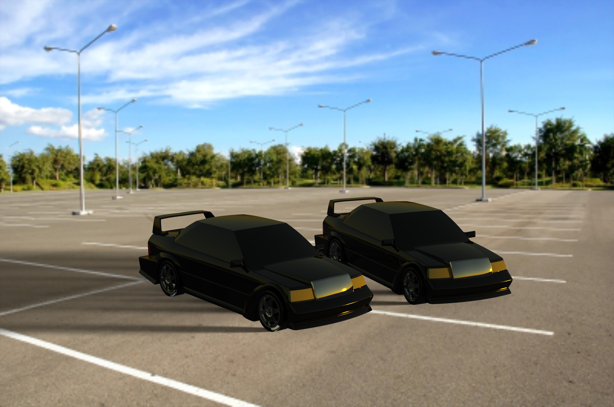
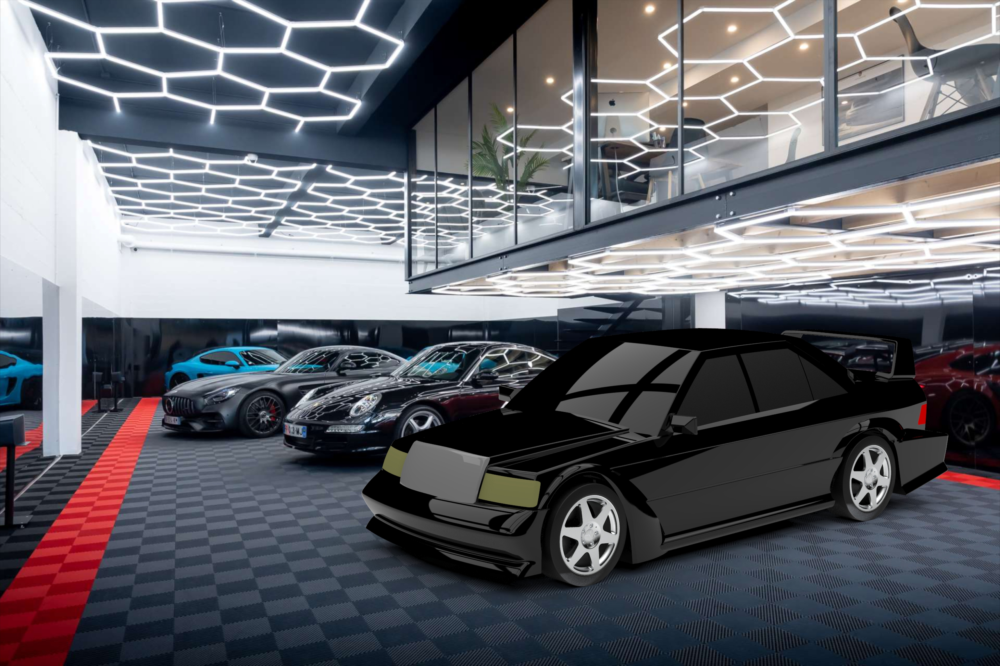
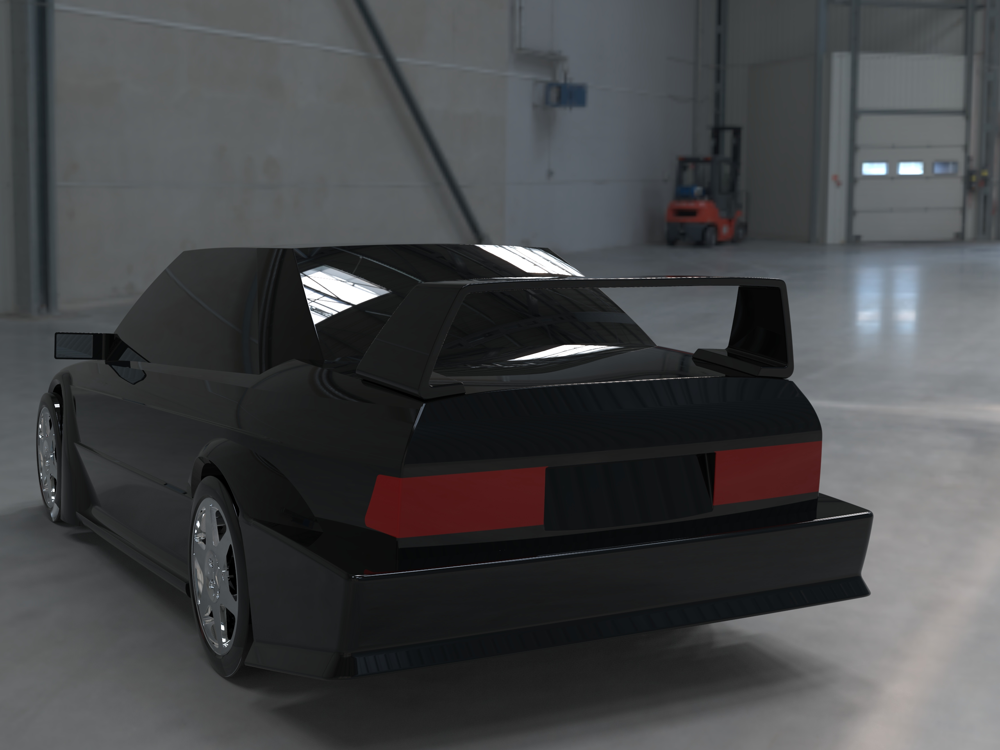

Rendus de synthèse






CP92 — P25 · CATIA V5
Maquette numérique complète de la Mercedes-Benz 190E 2.5-16 Evolution II réalisée en CATIA V5, icône du Touring Car des années 90. Modélisation surfacique haute fidélité, rendu de synthèse photoréaliste.
Dans le cadre de l'UV CP92, l'objectif était de modéliser intégralement une carrosserie automobile emblématique en CATIA V5. La Mercedes-Benz 190E 2.5-16 Evolution II (1990) a été choisie pour la complexité de ses surfaces — aileron arrière massif, passages de roues élargis, boucliers agressifs — qui constituent un défi technique représentatif des méthodes de modélisation surfacique avancée.
Le modèle a été construit pièce par pièce, du châssis aux détails de carrosserie, en respectant les proportions réelles du véhicule. Chaque surface a été construite par splines, lofts et raccords tangents pour garantir la continuité de courbure G2 entre les panneaux.
Les rendus de synthèse ont ensuite été produits pour valider le rendu visuel final et mettre en valeur les spécificités aérodynamiques de cette version Evolution : diffuseur avant, jupes latérales, et l'aileron biplan signature de l'EVO2.


